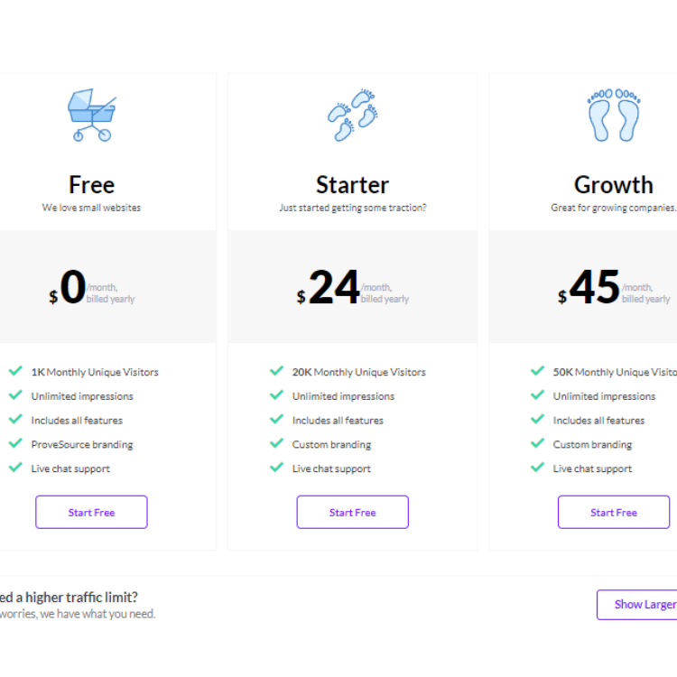

豪拜兒|提升網站轉換率的秘密武器：詳解ProveSource的社交證明功能！
如果你正在尋找一種有效提升網站轉化率的工具，ProveSource 是一個值得推薦的選擇。這款工具通過顯示真實的用戶行為和社會證據，來增強訪客的信任和參與度。無論你是運營電商網站、博客，還是提供線上服務，ProveSource 都能幫助你大幅提升轉化率。
什麼是 ProveSource？
ProveSource 是一款社會證據工具，通過實時顯示訪客活動和客戶行為來增加網站信任度和轉化率。例如，它可以顯示最近的購買活動、即時的訪問數據和熱門產品等。這些即時通知能夠有效地激發訪客的興趣和緊迫感，從而促進轉化。
ProveSource有甚麼功能？
提高信任度：
顯示實時的購買活動和訪客行為，可以增強新訪客對網站的信任感。訪客看到其他人也在進行購買或瀏覽，會更容易相信你提供的產品或服務。
增強參與感：
通過顯示最近的評論、訂單和其他活動，能夠讓訪客感受到一種社群的參與感，從而更容易轉化為購買行動。
增加轉換率：
轉換率是衡量訪客完成你期望他們達成的行動（如購買、註冊）的指標。ProveSource 通過顯示真實和動態的社交證明，能夠顯著提升這些轉換率。訪客看到其他人正在購買或註冊，會感到更有動機跟進，這對於增加你的網站的銷售量至關重要。
簡單易用：
ProveSource 的設置非常簡單，無需技術背景或複雜的設定。可以在幾分鐘內完成設置並開始展示證明。它支援多種網站平台，包括 WordPress、Shopify 等，並提供直觀的設置界面和客製化選項，讓你能夠根據自己的需求調整和優化證明的顯示方式。
客製化和報告功能：
ProveSource 提供豐富的客製化設置，讓使用者可以根據你的品牌風格和網站設計調整證明的外觀和顯示方式。此外，它還提供詳盡的報告功能，讓你能夠深入了解每個證明的效果和轉換率提升情況，進而進行策略調整和優化。
ProveSource 的共情效應
簡單的說，ProveSource 主要就是藉由共情效應提升這些轉換率。
何謂共情效應：
所謂的共情效應（Empathy Effect）。共情效應指的是人們在觀察到其他人的行為或情緒後，會產生類似的情感或行動反應。這種效應在社交證明（Social Proof）中尤為明顯。
共情效應與社交證明
共情效應在社交證明中發揮著關鍵作用，因為人們通常會依據他人的行為來決定自己的行動。當訪客看到其他人正在購買或註冊時，他們會覺得這是一個值得信賴的選擇，從而更有可能跟隨行動。這種效應背後有幾個心理學原理：
從眾效應（Herd Behavior）
人們往往會模仿大多數人的行為，認為這樣可以減少做出錯誤決定的風險。
社會認同（Social Validation）
看到其他人做出某個決定，會增強人們對這個決定的信心，因為他們相信這是經過多數人認可的選擇。
稀缺性（Scarcity）
當人們看到產品正在被快速購買時，會產生一種緊迫感，認為如果不趕快行動，可能會錯失良機。
ProveSource 如何利用共情效應提升轉換率
ProveSource 是一種顯示真實和動態社交證明的工具，通過即時顯示其他用戶的購買或註冊行為，來激發訪客的購買欲望。以下是 ProveSource 如何利用共情效應來顯著提升轉換率的幾個關鍵點：
- 實時通知：顯示其他用戶的實時購買或註冊通知，讓訪客感受到活躍的購買氛圍。
- 動態更新：不斷更新的動態信息增強了真實感，讓訪客相信這不是事先設定好的假數據，而是其他真實用戶的行為。
- 透明性：顯示用戶的地理位置或名字，增加可信度和社會認同感，讓訪客更容易產生共情效應。
- 營造稀缺性：展示限時特價或剩餘庫存數量，讓訪客感受到購買的緊迫性，激發立即行動的動機。
如何設置 ProveSource？
以下是設置 ProveSource 的基本步驟，基本上可以分為三大步驟：
- 註冊及登錄
- 方案選擇：選擇與自己網站流量相符的方案
- 獲取追蹤碼：也就是將一段程式碼植入自己的平台，來達到實時監控的目的。
- 創建活動：如同上文提及的ProveSource 主要就是藉由共情效應提升這些轉換率，使用者可以選擇要與讀者、觀眾、買家建立互動的方式。
註冊並登錄
在畫面的右上角，點擊Start free或是Log in ProveSource 帳號並登錄。註冊的方法相當簡單，可以直接使用gmail註冊，習慣中文的小夥伴也可以直接點擊google翻譯將整個網頁翻譯成中文使用。
方案選擇
相當佛心的，ProveSource居然有提供0元方案，且服務的項目與時長也都相當齊全，大推此項優點。當然，若您的網站流量較大，不妨選擇付費版本來滿足以符合網站流量的需求。 
創建活動
創建一個新的活動（Campaign），選擇你希望顯示的通知類型，例如購買通知、訪問數據等。

獲取追蹤程式碼並添加到網站
在活動設置頁面中依照所使用的平台選擇，ProveSource 提供的追蹤程式碼。可以看到它服務的平台相當廣泛。
例如小編選用html，就是將追蹤程式碼添加到網站的 head 。

結語
ProveSource 能夠迅速提升你網站的轉化率。讓你的網站更加吸引人。事不宜遲，訪問並開始使用 ProveSource，ProveSource網站連結如下，趕快註冊起來吧：
-
點我前往ProveSource：點我前往ProveSource